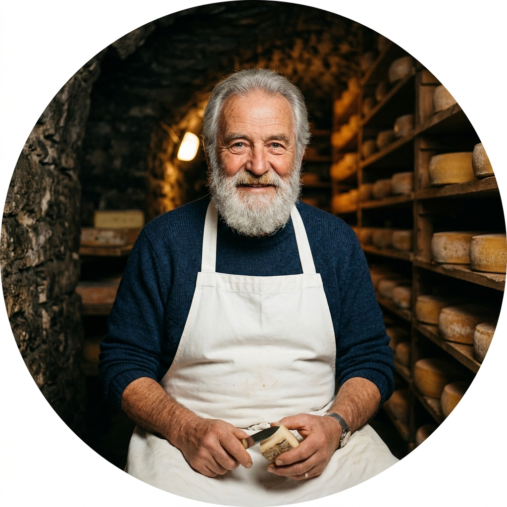
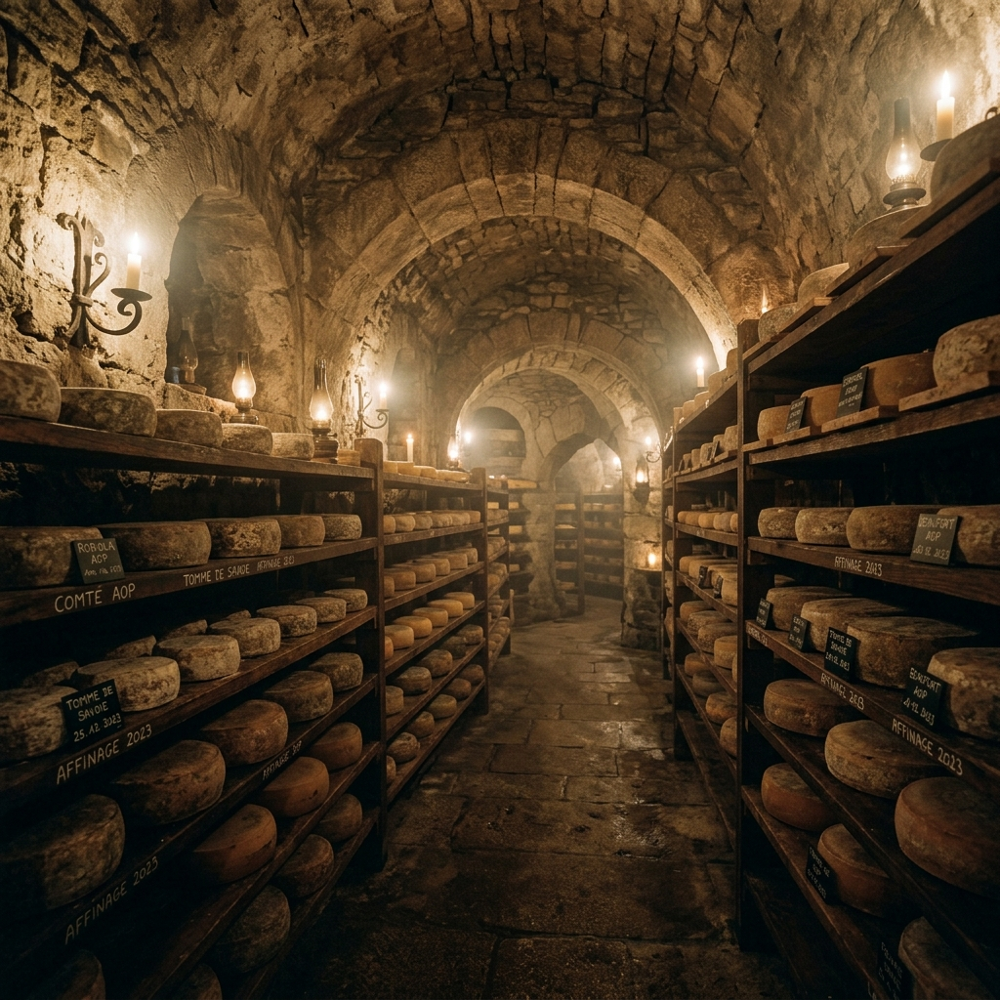
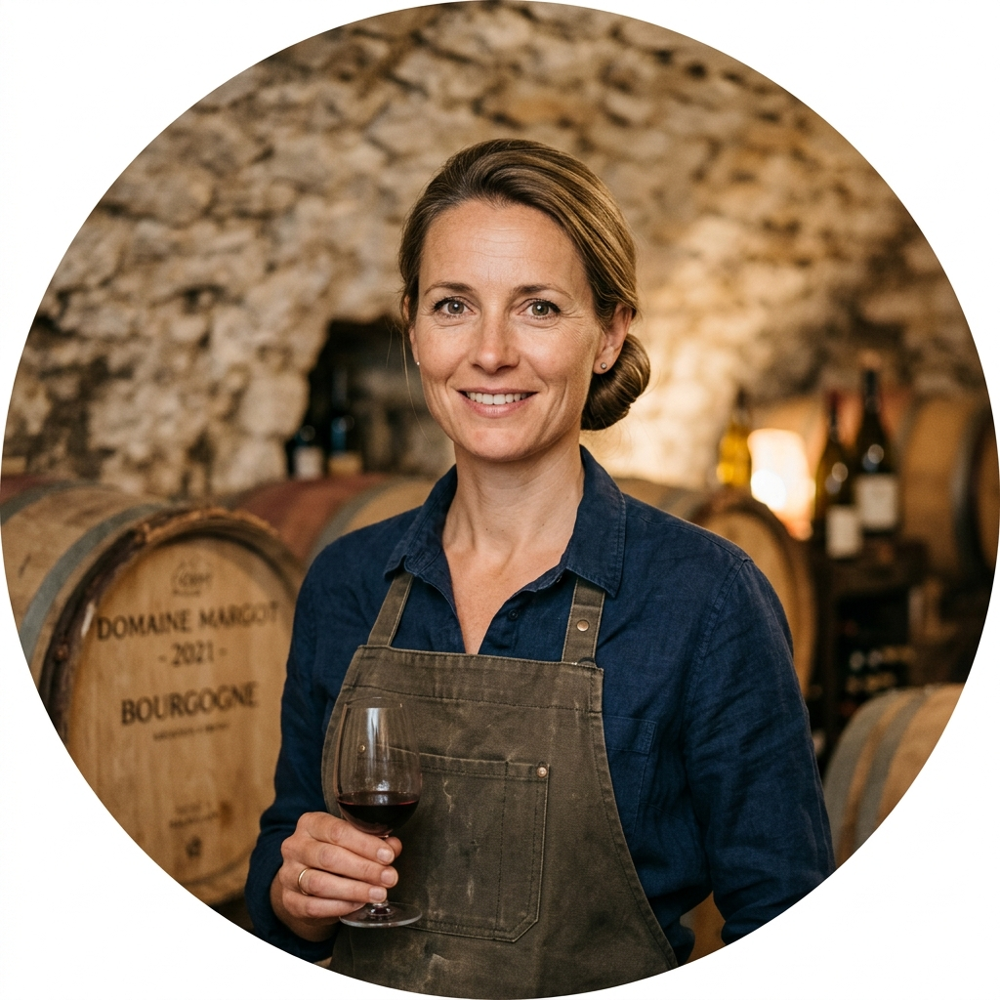
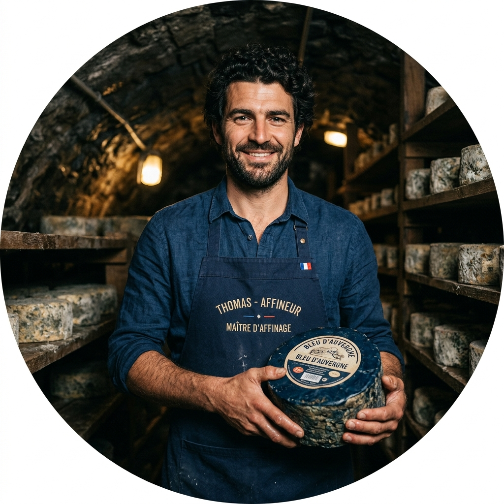

From Apprentice
to Master
The Affineur Cellar began not with a business plan but with a conversation — between a 22-year-old apprentice and an elderly fromager who believed that the most important moment in a cheese's life was not when it was made, but when it was aged.
That apprentice was Emile Vaucher. He spent three years in the caves of Comte country, learning to read humidity with his skin, to judge a wheel's readiness by the tone of his knock, and to resist the impatience that ruins more cheese than any pathogen.
In 1987, he returned to Burgundy and carved his own cellar into the limestone beneath his family's farmhouse. Today, four decades on, that same cellar holds over 800 wheels — and a philosophy unchanged by time.
We believe that great cheese cannot be rushed. By working in close partnership with local farms and respecting the natural rhythms of the seasons, we preserve a traditional craft that is increasingly rare in the modern world.
Four Principles
We Never Compromise
Patience Above Profit
No wheel leaves the cave before it is ready. We do not age to a date on a calendar — we age to the flavour profile the cheese was always destined to achieve. This sometimes means holding back for weeks longer than planned.
Honest Milk
We never work with pasteurised factory milk. Raw milk from small, known farms is the core foundation of every single wheel that we produce. When we know the name of the farmer and their field, we know the cheese.
Daily Attention
Every wheel in the cave is inspected every day. No exceptions. The difference between a masterpiece and a failure is often a matter of twenty-four hours of inattention. We do not take days off from the cave — it will not allow it.
Transparency
Every single tasting box ships with full provenance documentation — the farm, the animal, the date of pressing, the exact aging duration, and our tasting notes. We believe the story of a cheese is as important as the cheese itself.
Our Stone Cellar —
A Living Environment

Our cellar was carved from Burgundy limestone in 1987 and has aged continuously since opening day
The Environment
Does the Work
Our cave is maintained at a constant 12°C and 95% relative humidity — conditions that perfectly mimic the natural limestone caves where traditional French cheese aging was developed over centuries. No synthetic humidity control. No industrial refrigeration. The cave breathes naturally through its ancient stone walls.
Within the cellar, we have identified three distinct micro-zones: the warm arch zone near the entrance, where bloomy rind cheeses mature under gentle temperature swings; the mid-cellar, stable and cool, for our washed-rind varieties; and the deep back zone, the coldest and most humid, reserved for our long-aged alpine wheels.
The Hands
Behind the Wheels
A small team of four — each carrying specialised knowledge passed down through apprenticeship and decades of daily practice.
Emile Vaucher
Founder & Master Affineur. With forty-plus years inside our cellar, he handles all long-aged alpine wheels and approves every cellar release.

Margot Vaucher
Cellar Manager & Cave Specialist. Emile's daughter, trained in Jura and Burgundy. She leads our washed rind and bloomy rind cheese programmes.

Thomas Roux
Blue Cheese Affineur. Trained under a legendary Roquefort master, Thomas manages all blue-veined and ewe-milk wheels in our own inventory.
Celine Moreau
Tasting Lead & Curator. Responsible for tasting box curation, cellar notes writing, and quality benchmarking for releases from our own cave.
Awards &
Accolades
Concours International du Fromage
Slow Food Guide, 2022–2024
World Cheese Book, 2022
Paris Fromage Festival, 2024
Le Monde & The Guardian
Experience the Cellar
for Yourself
Arrange a private cellar visit, or begin with one of our curated tasting boxes — a guided journey through our cave, delivered to your door.